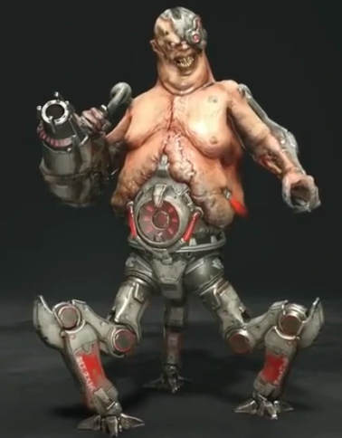

-
Arachnotron
Arachnotrons are built with genetic material recovered from the remains of the original Spider Mastermind, bio-engineered for cyber-augmentation. While its actual body exhibits only limited mobility, the oddly cerebral qualities of the Arachnotron make it a prime candidate for the impulse-controlled prosthetic frame that it now permanently inhabits. The UAC facility responsible for the Arachnotron's creation, intended to engineer and weaponize demons of its own design, was overrun after an outbreak occurred at its assembly plant, killing everyone inside. The facility, still operating under the directive of the administrative AI, continues to manufacture Arachnotrons autonomously.
-
Arachnotron

Forged from Hellfire, the Archvile is feared amonglesser demons for its innate ability to channel andmanipulate the unholy powers of Hell magic. Descended from the eldest race of demons, the Arch-vilehas long held a place within the ruling caste of high-borndemon lords. Possessing superior intellect among the demon ranks,the Archvile's psychomancy powers make it a natural-born rulerof the savage and primitive beasts of Hell, capable of bendingweak-minded underlings to serve its will.
-
Baron of Hell

The Fireborne Barons have evolved from the descendant clan of the Baron hell breed, and are indigenous to the caustic, scorched hellscapes bordering the Burning Abyss. A landscape of cragged spires forged from unbreakable Blackstone, tempered by the crashing waves of the magmatic tide, these sulfuric planes of Hell have long served as banishing grounds - a place of the exodus to which the damned are sentenced as their final destination. The Fireborne Barons have evolved in this environment, sustaining themselves on the remnants of the damned, growing obsidian carapaces and in time becoming infused with the very incendiary matter of Hell itself.
-
Cacodemon
Hunters of the Sloughlands, the Cacodemon lurks the bottomless and murky depths of Hell in search of easy prey. An aimless wanderer, the Cacodemon is mostly devoid of cognitive ability, sensory awareness, and otherwise commonly occurring impulses. Driven only by a singular desire to feed, the Cacodemon is likely to appear wherever there is flesh to be consumed, bringing with it an insatiable propensity for hunger. It is said that the Cacodemon bears some resemblance to the cycloptic titans of ancient Hell lore, leading Sentinel scholars to believe that the forgotten titans may yet live on in some disembodied form.
-
Carcass
The product of inhumane bio-mechanical engineering, the Carcass was created in the remote labs of the Cultist enclave. Neither truly living nor dead, it exists in a state of partial re-animation - its cybernetic armature simulating a living impulse within a decaying organic host. Devised as a means of extending a soldier's usefulness in combat after death, the unliving host can only be destroyed by severing the body from its cybernetic implants.
-
Doom Hunter
The Doom Hunter's cybernetic augmentations are extensive, with the only visible remnants of the original demon being its head, right arm, and half of its upper torso. The rest of its body is mechanical, including a large cannon, a twin-bladed chainsaw arm, and a set of thrusters that allow it to move through the air. It can also interface with a "sled," a hovertank-like apparatus equipped with dual heavy machine guns, rocket launchers, and a shield generator that protects the Doom Hunter's main body from harm.
-
Dread Knight

A variation of the Hell Knight breed, the Dread Knight has been modified and hardwired for aggression. Armed with exo-prosthesis powering energy-blade augments, the Dread Knight is the lethal result of UAC Cultist engineering. Epinephrine regulators modulate the Dread Knight with an unbroken flow of rage-addled adrenaline, while its endorphin receptors have been synchronized to respond with the use of its arm-mounted blades. With each kill, the Dread Knight is injected with a flood of artificial dopamine. As a result of its augmentation, the Dread Knight is driven by a biochemically engineered state of pure, unbroken rage - suffering for which respite can only be found in the act of the kill.
-
Gladiator

In the years following the end of the Golden Age, competing factions of Argent D'Nur turned against one another. An insidious influence has set itself upon the Sentinel people, corrupting its once sacred traditions. The coliseum, once a place of honorable combat where prisoners of the Argenta were tested for the right to fight in the front lines of their army, has since become a place of blood-sport. In violation of Sentinel law, the Priests have encaged a demon there, a merciless executioner used to enact judgement of their own decree. The Gladiator, wielding an accursed shield which entombs the tormented soul of his undying master, remains undefeated in battle, infamous for the many lives it has claimed.
-
Icon of Sin

Born from the tortured spirit of the Betrayer's son, it was by Hell's unholy design that the Icon of Sin was given flesh. The fearsome Titan, forged from the essence of mortal suffering, once bore a human soul - a soul now transmogrified and entombed within the still beating heart of its former self. The Betrayer, seeking to free his son from eternal torment within the depths of Hell, made an agreement - a pact sealed by the black fates of darkness - that promised to grant his son the chance to return from death. The son would live again, but not as a human - in Hell's endless cruelty, the son was damned to become the Icon, an inhuman existence bound only to its former humanity by the now disembodied, undying mortal heart.
-
Whiplash
A scavenger of the Hellscape, the Whiplash creature was first discovered by UAC expedition teams in the black desert of the Sanctum Wastelands. These elusive, serpentine demons move with great speed and agility. They are capable of striking from a great distance with retractable bladed whips concealed within their forearms. This particular demon breed became an object of great interest to the UAC engineers on Earth, while attempts to capture live specimens of this nimble and unpredictable creature proved to be exceptionally dangerous. After successfully acquiring living specimens, researchers implanted cybernetic augmentations designed to enhance the Whiplash's innate strength and lethality.
-
Mancubus
The Mancubus, hulking behemoth of the demon world, bears notable differences from those of its kind first encountered by the UAC expedition team on Mars. Unlike its brethren which wore a naturally occurring armored carapace, this variation shows clear signs of pre-existing man-made modifications. Armor-plating augmentation to its exterior and a sophisticated arm-mounted weapon system indicate a clear intent to upgrade and weaponize the fighting capacity of the Mancubus, whose heavy stature and resilience make it a formidable threat in battle.
-
Marauder
As civil war consumed Argent D'Nur, the Night Sentinels Guard was quartered by their faith. Torn between serving the Khan Maykr or revolting against that which they swore to protect. Those most disillusioned forswore their oath to the Sentinel royalty, abandoning their pact of allegiance made to the throne. These hardened warriors joined the separatist group led by the exalted Priest class, allying themselves with the Maykrs and their devout acolytes in an attempted coup against the Sentinel royal house. Those Sentinel warriors who fell in battle, having sided with the Maykrs, were ultimately denied finality in death. Resurrected by the Divinity Machine of Maykr design, these fallen Sentinels were returned from the dead, transformed by Hell's power, and recreated with a singular purpose: to hunt the Slayer, now reborn as Knights in Hell's army.
-
Pain Elemental

An abhorrent creation of the Umbral Plains, the Pain Elemental is descended from the primal, abominable depths of the demon world. Knowing only its own torment, the Elemental is cursed to forge Lost Souls within the fiery pit of its gut--a process that is excruciating and without end for the duration of the creature's miserable lifespan. The Elemental's only reprieve from its own agonizing and torturous existence is the projection of suffering into the world. For this reason, the Pain Elemental reaps great satisfaction from indiscriminate killing and the infliction of misery upon those weaker than itself.
-
Pinky
As Hell emerged on Earth the Pinky began to appear on terrestrial soil in great number, rapidly becoming the bane of existence to ARC military fortifications. Utilizing its armored frontal carapace, the Pinky is able to penetrate defensive encampments, breaking through walled defenses and using its ramming ability to upturn and immobilize armored vehicles. ARC deployments, dependent on their ability to hold the line against encroaching forces of Hell, could be disrupted and even overtaken by a single Pinky, were it able to penetrate and break through their defensive matrix. allowing a greater demon influx to pour in after it. The ARC rapidly prioritized the target status of the Pinky, issuing high-range bombardment to prevent the Pinky from gaining proximity.
-
Revenant
The Revenant program, a bio-weapon experiment utilizing re-animated necrotic human tissue, was believed to have been destroyed with the collapse of the UAC facility on Mars. However, the emergence of the Cultist enclaves on Earth - former UAC deviations now under Hell's direct control - have begun work on a second wave of production of the Revenant program. While much of the platform's existing weapon payload is preserved as originally designed, the cyber-neural programming has undergone modification. Patterned signals are wired to the host's frontal cortex, which in turn stimulate a state of frenzied, unrestrained bloodlust. While these signals are active, the host is incapable of thinking or feeling anything but a singular compulsion to inflict death and violence on the living.
-
Tyrant
Demon Lords to the black soul pits of Babel, the Tyrants have long served as wardens and slavers of the infernal pits. Weaponized and cybernetically altered by the UAC, the Tyrants are tasked with overseeing the collection and extraction of sin-branded souls from the mortal world, their role in Hell ordained by the unholy sigil of the Elder Hell-gods. A sadistic master of lesser demons, the Tyrants are feared for their cruelty and malice.
-
Khan Maykr

The Khan Maykr is one of the many Khan Maykrs that is birthed by the Singularity, the collective Maykr consciousness, that is destiny-bound to lead the Maykr race until the next Khan is born. The Singularity, which contains the conscious soul-data of every major Maykr that has ever lived and died, processes and refines this data as a means of selective evolution. As hierarch of the conscious neural-matrix to which each Maykr is interconnected like a hivemind, it is physically impossible for a Maykr to refuse the collective order of shared consciousness and disobey a Khan. This system has functioned without error since the creation of Urdak, until the disappearance of The Father, the progenitor of the Maykr race, caused by a rogue Maykr known as the Seraphim. Without the Father, the Maykrs are incapable of creating a successor to the Khan lineage, allowing the current Khan Maykr to rule Urdak without limit.